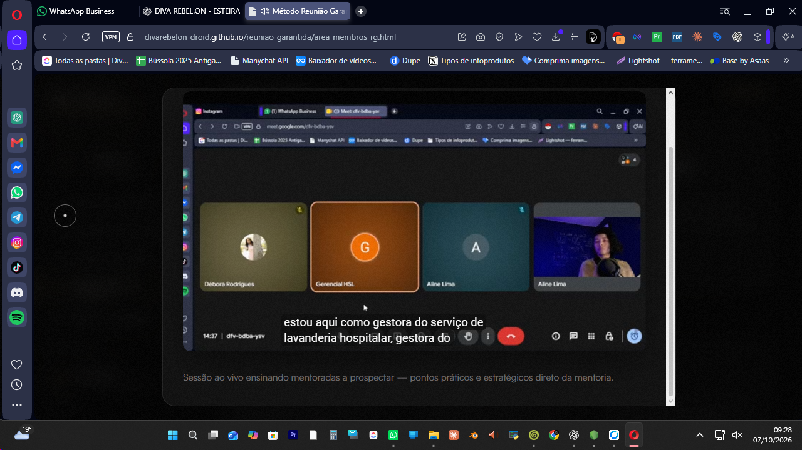
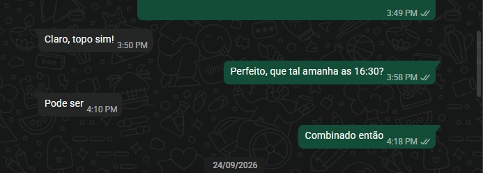
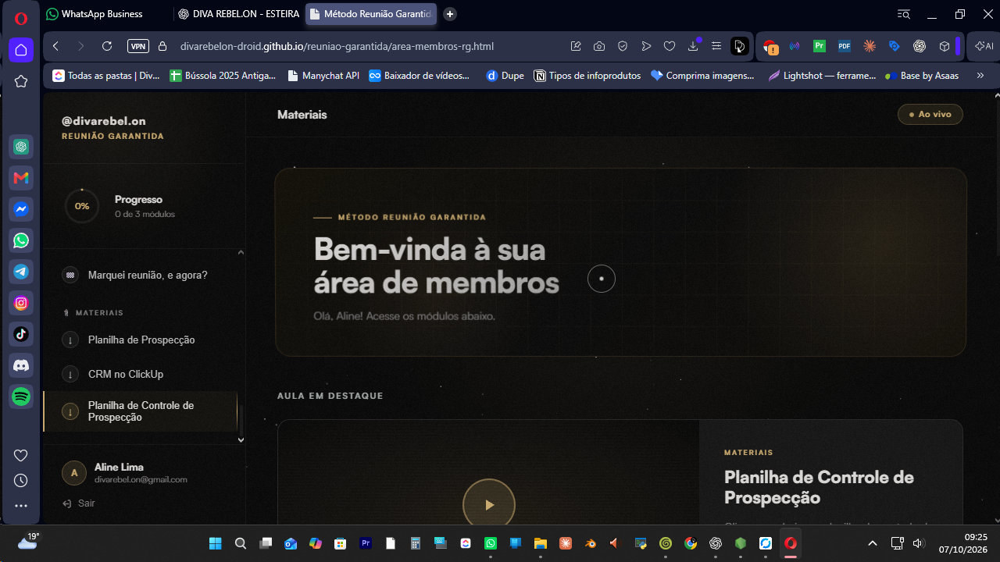
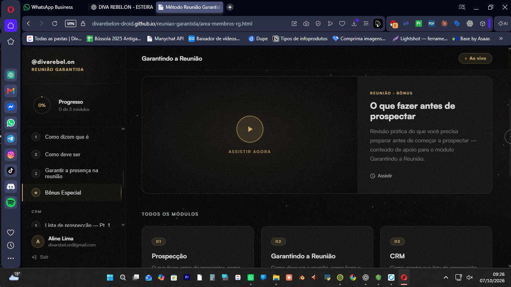
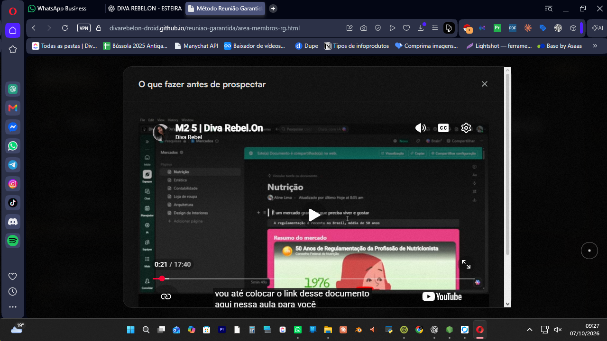
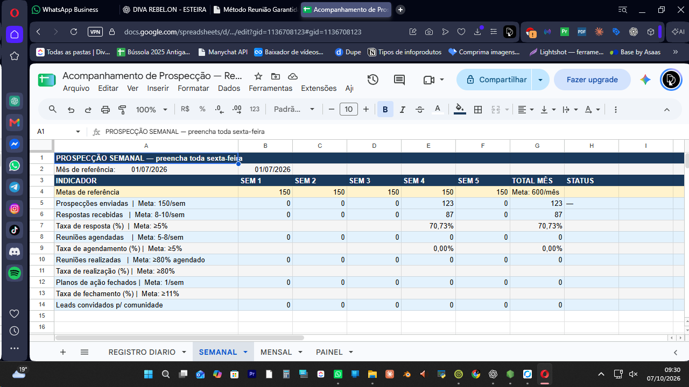
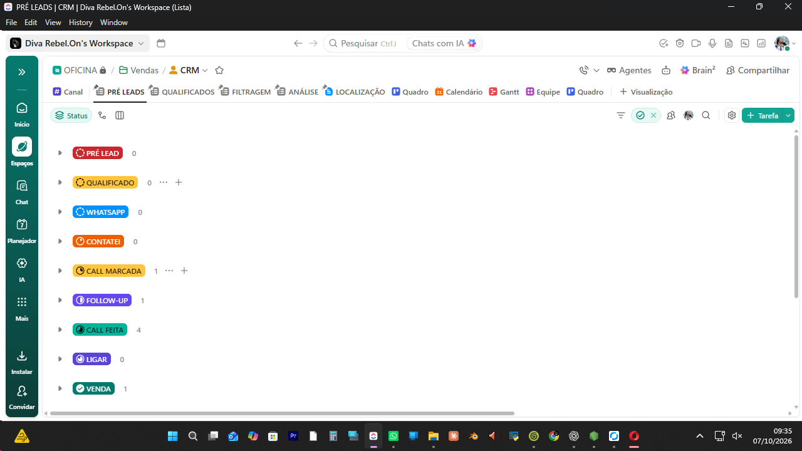

Treinamento que preparei para minhas mentoradas
Aulas que eu usei para ensinar prospecção para quem estava sendo acompanhada diretamente por mim.

Se você manda mensagem para 10, 20, 30 empresas e a maioria simplesmente não responde, provavelmente já te disseram:
Eu não concordo.
Na minha operação, até 70% das empresas que eu abordo respondem.
Não porque eu tenho um script mágico.
E muito menos porque eu ofereço análise gratuita ou promessas de aumentar faturamento.
Eu simplesmente parei de tratar prospecção como “mandar mensagem para alguém” e comecei a tratar como um processo de condução.
E é exatamente isso que eu te ensino no Reunião Garantida.
Aprenda a prospectar pelo WhatsApp, gerar respostas, conduzir a conversa até o agendamento e aumentar as chances da pessoa realmente aparecer na reunião.
QUERO PARAR DE SER IGNORADO NA PROSPECÇÃOAntes de eu te explicar mais coisas, resolvi liberar essa aula gratuita.
Eu quero usar essa aula para te mostrar por que a mensagem vem por último.
Porque talvez você esteja procurando:
“qual mensagem mandar?”
“qual script converte?”
“como abordar sem parecer vendedor?”
Só que a primeira mensagem é só uma pequena parte do problema.
Se você faz o que todo mundo fala: seguir o lead, interagir, enviar direct elogiando o perfil e oferecer um diagnostico gratuito, vai ser ignorado mesmo. Todo mundo faz isso, o lead já sabe que não é um diagnostico gratuito. Você quer vender, isso esta batido e não estou aqui para te ensinar essa porcaria.
É por isso que copiar a mensagem que funcionou para fulano quase nunca resolve.
Você não precisa de mais uma mensagem.
Você precisa entender o processo inteiro.
Talvez você já tenha feito isso.
empresas em 3 dias
Abriu o Instagram.
Procurou algumas empresas.
Pegou o WhatsApp ou foi no direct do Instagram mesmo
Ficou 10 minutos pensando no que escrever para não parecer invasiva.
Mandou.
Visualizado.
Nada.
Mandou para outra.
Nada.
Outra.
Nada.
Aí uma respondeu:
“Oi, tudo bem?”
E agora você travou de novo porque não sabia como continuar sem começar a apresentar seu serviço porque um monte te ignorou e você não quer perder essa única que te respondeu.
No final 3 dias você prospectou 60 empresas, falou de verdade com duas e não marcou nenhuma reunião
Nos outros dias?
Você não prospecta.
Porque ninguém acorda animado para ser ignorado de novo.
E é assim que muita social media volta para o modo:
“Vou continuar postando e esperar alguém aparecer.”
O problema é que esperar alguém aparecer não é processo de aquisição de clientes.
“Mas Aline, ser ignorado na prospecção faz parte.”
Vai acontecer?
Claro.
Nem todo mundo vai responder você.
Mas existe uma diferença enorme entre:
algumas pessoas não responderem
e
a maioria das suas prospecções morrer sem nem começar uma conversa.
Na minha rotina de prospecção, trabalho com aproximadamente 30 empresas por dia e já tenho taxas de resposta que chegam a 70%, normalmente gerando reuniões a partir dessas conversas.

Esse é o meu resultado aplicando o processo.
Ele prova uma coisa:
ser ignorado pela maioria não precisa ser tratado como inevitável.
Ela não existe.
E esse é justamente o erro de muita social media quando começa a prospectar.
Vê alguém dizendo:
“Mandei isso e fechei uma cliente.”
Copia.
Não funciona.
Procura outra mensagem.
Copia.
Também não funciona.
E começa a montar uma pasta cheia de scripts sem entender por que a conversa deveria avançar.
No Reunião Garantida, eu não quero que você dependa de mim para escrever sua próxima mensagem.
Quero que você consiga olhar para uma empresa e saber:
Porque quando você entende isso, você deixa de decorar frases.
Você começa a conduzir conversas.
E aí a prospecção muda de lugar na sua cabeça.
Em vez de:
“Ai meu Deus, preciso de cliente. Para quem eu mando mensagem?”
Você começa a ter um processo.
Você sabe onde procurar.
Sabe quem abordar.
Sabe como começar.
Sabe o que fazer quando respondem.
Sabe como fazer follow-up.
Sabe como chegar até a reunião.

A plataforma por dentro
E principalmente:
você para de sentir que, se perder um cliente amanhã, não faz ideia de como encontrar outro.
Para mim, esse é o maior valor do Reunião Garantida.
Não é só reunião.
É segurança comercial.
Você vai aprender a montar uma rotina de prospecção que faça sentido para sua realidade, escolher empresas com mais critério, fazer uma primeira abordagem que abra conversa, conduzir as respostas sem transformar o WhatsApp num pitch, fazer follow-up sem ficar implorando atenção, convidar para a reunião no momento certo e criar um processo de confirmação para reduzir as faltas.
Porque reunião marcada e reunião realizada são duas coisas completamente diferentes.
Essa pessoa precisa chegar na reunião, querendo estar la.
Não vou te ensinar a mandar um PDF.
Nem oferecer análise gratuita.
Nem sair apontando defeito no Instagram da empresa para criar problema e tentar vender solução.
A ideia é justamente o contrário.
Fazer a conversa parecer uma conversa.
Só que uma conversa com direção.
E você ainda recebe os bastidores que eu uso na prática.
Além do treinamento principal, eu reuni materiais que nasceram da minha própria operação.

Treinamento principal organizado em módulos
Treinamento que preparei para minhas mentoradas

Treinamento de BDR de R$97 por R$00
Ou seja: você consegue ver a lógica sendo traduzida para alguém que precisava colocar o processo para funcionar todos os dias.

Masterclass de prospecção de R$77 por R$00
Planilha de prospecção de R$97 por R$00

CRM no ClickUp de R$397 por R$00

O Reunião Garantida é para a social media que…
Está começando e não quer depender de indicação para conseguir os primeiros clientes.
Ou já atende, mas percebeu que ainda não tem uma forma previsível de gerar novas oportunidades.
Porque talvez hoje esteja tudo bem.
Você tem dois, três, quatro clientes.
Mas eu quero que você responda uma coisa:
Se um deles cancelar hoje, você sabe exatamente o que fazer amanhã para começar a buscar outro?
Se a resposta for não…
seu problema não é falta de cliente hoje.
É falta de um processo para conseguir clientes quando precisar.
E é justamente isso que você está comprando.
Não são mensagens.
Não são templates.
Você está comprando a capacidade de pensar:
“Preciso gerar novas oportunidades.”
e saber exatamente qual processo iniciar.
Essa sensação muda completamente sua relação com a profissão.
Porque você deixa de depender exclusivamente de indicação, sorte, Direct e postagem.
O investimento
O Reunião Garantida custa R$668,00.
Mas hoje você entra por:
Pagamento único.
E recebe o treinamento completo + todos os bônus.
QUERO TER UM PROCESSO PARA CONSEGUIR REUNIÕESSe uma única reunião pode virar um contrato…
R$47,90 deixa de ser a questão.
A questão é:
quanto custa continuar sem saber conseguir a próxima reunião?
Porque a social media que não sabe prospectar sempre fica vulnerável.
Quando perde cliente, entra em desespero.
Quando a agenda está cheia, para de buscar oportunidades.
Quando precisa de dinheiro, volta correndo para o WhatsApp e tenta qualquer coisa.
E prospecção feita no desespero quase sempre parece prospecção feita no desespero.
Eu prefiro que você aprenda isso antes de precisar urgentemente.
Ótimo.
Você não precisa esperar construir audiência para começar.
Eu já fechei cliente sem portfólio, sem diagnóstico gratuito e sem PDF bonitinho.
Então é ainda mais importante aprender cedo de onde seus clientes podem vir.
Então provavelmente esse treinamento faz ainda mais sentido para você.
Porque talvez você não tenha um problema com prospecção.
Talvez tenha aprendido a prospectar de um jeito que facilita ser ignorada.
pegar uma empresa que você decidiu prospectar e conduzir essa oportunidade até uma reunião realizada.
Você não precisa convencer ninguém a responder você.
Mas precisa dar um bom motivo para a conversa começar.
E isso é completamente diferente.
Se hoje você ainda depende de coragem, inspiração ou de uma mensagem que encontrou na internet toda vez que resolve prospectar…
eu quero te ensinar um processo melhor.
Porque mensagem mágica não existe.
Condução existe.